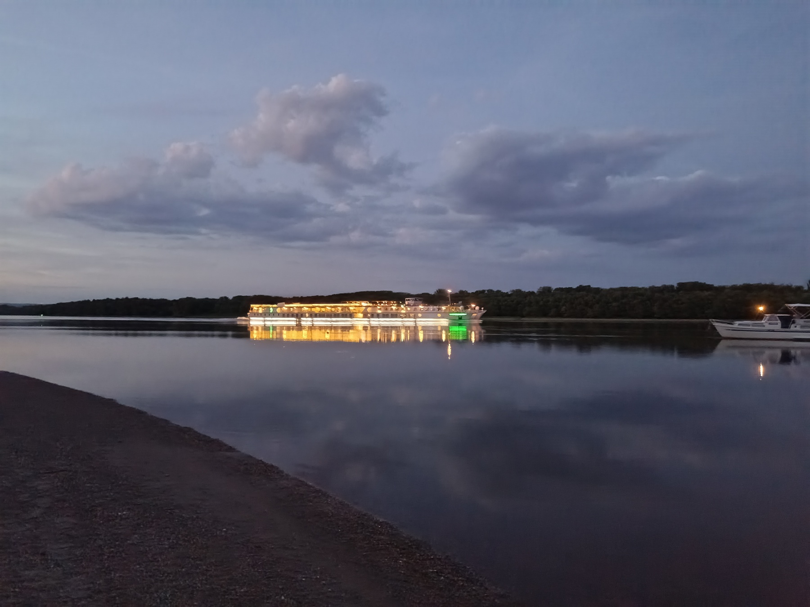
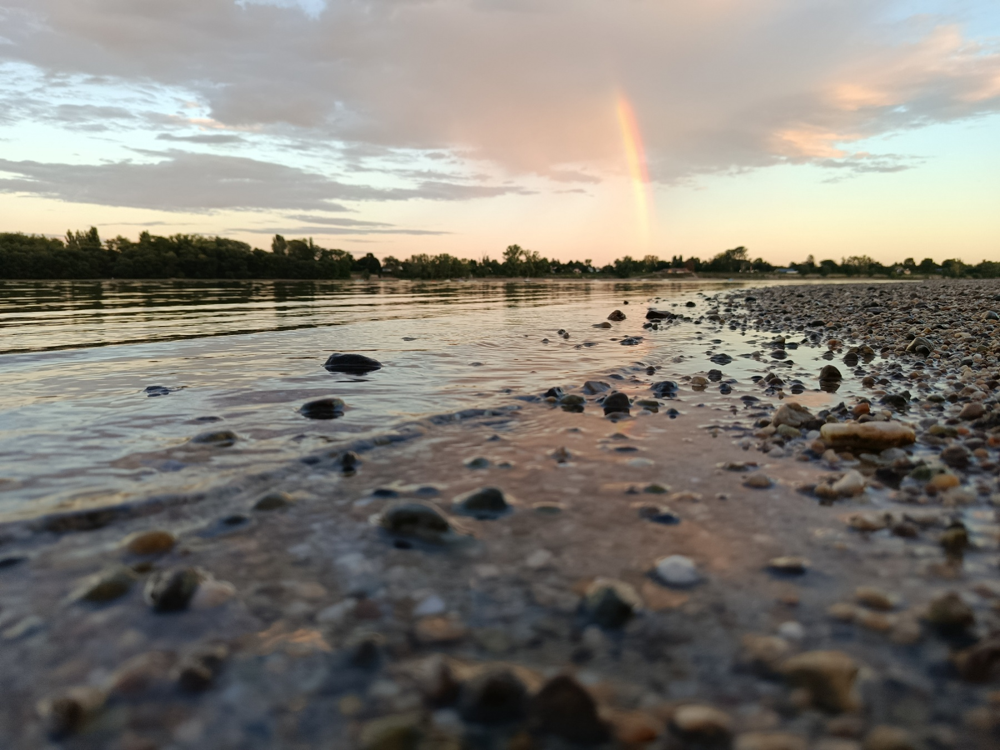
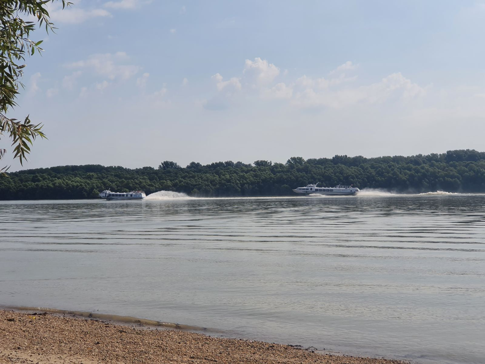
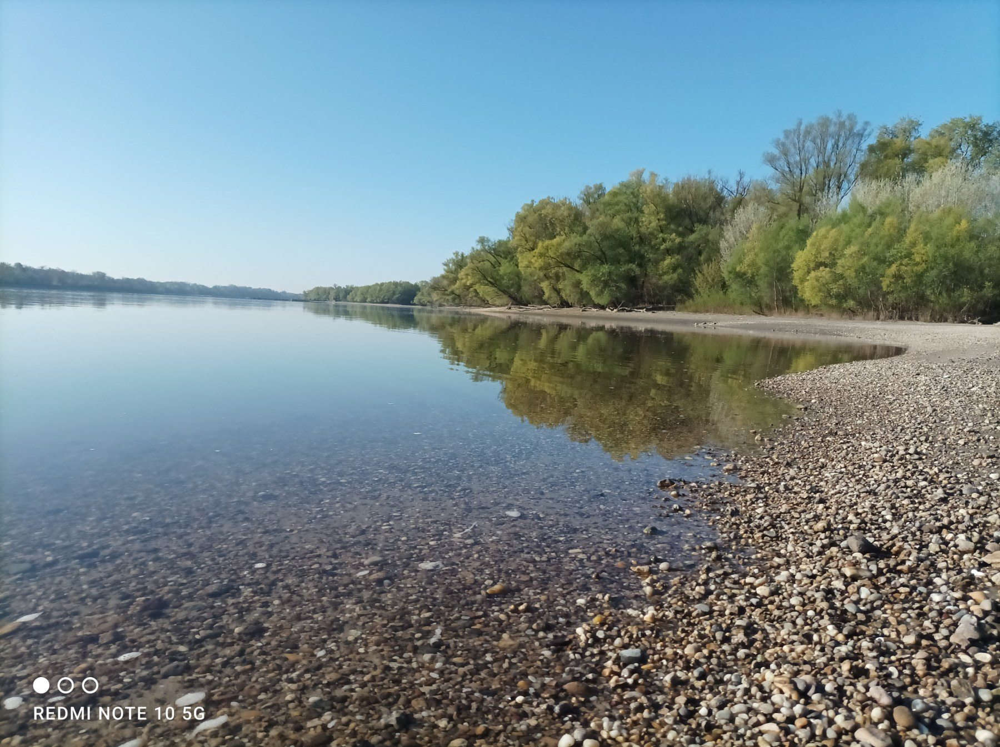
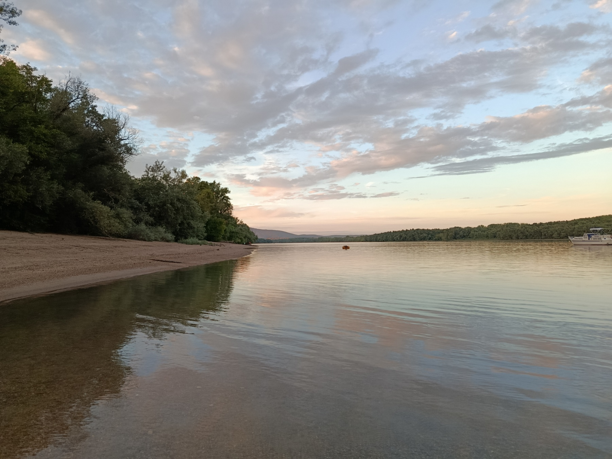
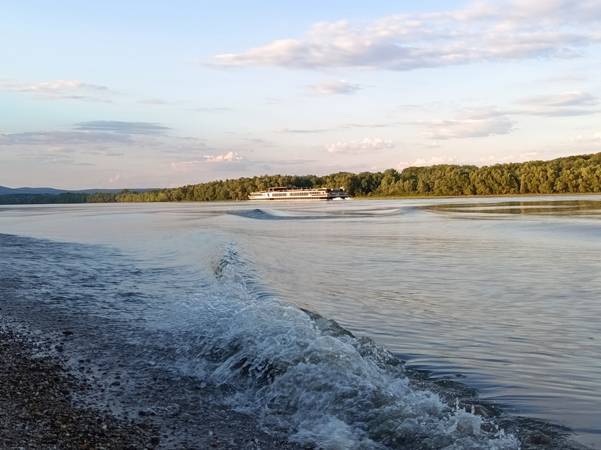

Bemutatkozás
A Surányi Duna-part egy csendes, természetközeli hely, amely kiváló kikapcsolódást nyújt családoknak, kerékpárosoknak, horgászoknak és minden természetkedvelőnek.
🌳 Természet
Csendes, árnyékos környezet a Duna partján.
🚲 Kerékpárosok
Könnyen megközelíthető kerékpárral is.
🗑️ Tisztaság
Kérjük használd a kihelyezett hulladékgyűjtőket.
Galéria






Hol található?
A Surányi Duna-part könnyen megközelíthető autóval, kerékpárral és gyalogosan is.
Fontos tudnivalók
- Egész évben látogatható
- A belépés ingyenes
- A fürdőzés saját felelősségre történik
- Kérjük használd a kihelyezett hulladékgyűjtőket
- Vigyázzunk együtt a természetre!
Köszönjük, hogy segít megőrizni a Surányi Duna-part szépségét!
Legyen szó egy észrevételről, egy fényképről vagy egy Google Maps értékelésről, minden visszajelzés hozzájárul ahhoz, hogy ez a különleges hely még több emberhez eljusson.
Kapcsolat
📧 Írjon nekünk!
Valamilyen problémát észlelt a parton, vagy szeretné megosztani velünk élményeit, észrevételeit vagy javaslatait?
Örömmel várjuk üzenetét az alábbi e-mail címen:
⭐ Google Maps értékelés írása
Járt már a Surányi Duna-parton? Ossza meg tapasztalatait, és segítsen másoknak is megismerni ezt a különleges helyet egy Google Maps értékeléssel!
Google Maps értékelés